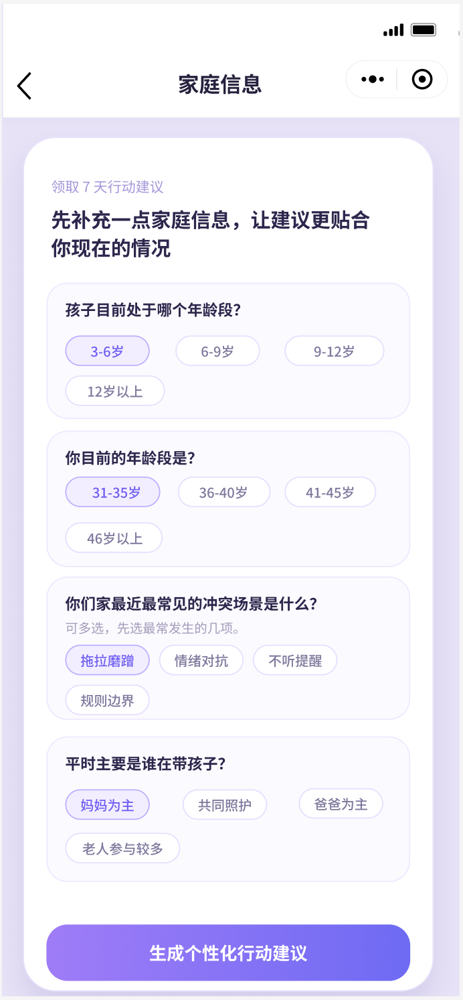
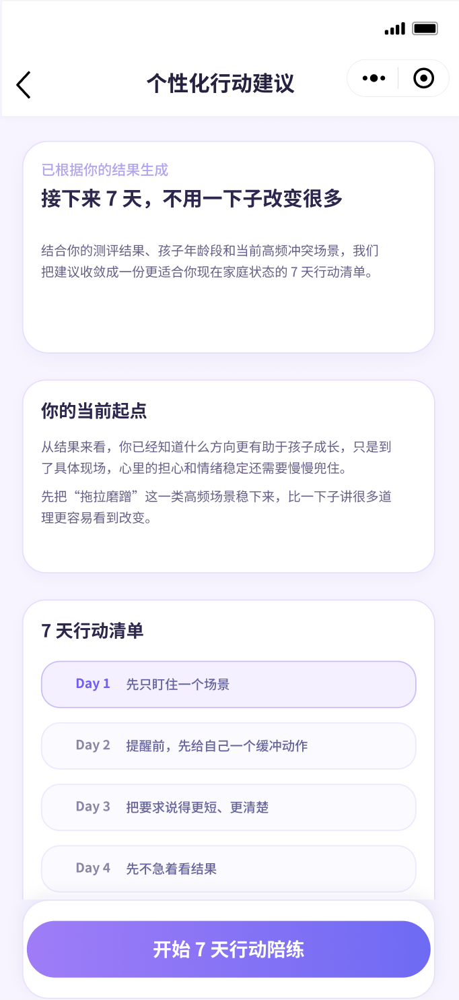

企业微信聊天页
先由老师通过企业微信发送本章测评小程序，用户从聊天卡片自然进入，不是被硬推着做题。

这一部分保留你之前做的书页真实插码场景，用来说明用户是从哪里被触发进入这套测评链路的。
从这里开始替换成你现在画布上的链路顺序：先看到企业微信聊天里的小程序入口，再进入小程序首页，然后进入完整长页答题。
先由老师通过企业微信发送本章测评小程序，用户从聊天卡片自然进入，不是被硬推着做题。
进入后先看到“第一章配套测评”的首页说明，再从这里点击开始评估。

16 道题全部放在一个长页面里，用户直接下滑答题，底部固定按钮承接到结果页。

这一段对应画布上的结果页、家庭信息收集和后续行动承接：先看长结果页，再进入家庭信息，最后落到个性化建议与 7 天陪练。
结果页先展示指数和画像，再往下看到维度得分与维度解析，底部固定按钮承接下一步。

用户点击结果页 CTA 后进入信息收集页，用更少字段获取年龄、冲突场景和当前最困住家长的问题。

先给贴近当前家庭状态的建议摘要，再承接到 7 天行动陪练，作为结果页之后的持续行动入口。

/Users/lulu/AIWork/docs/prototypes/parenting-book-funnel/assessment-full-funnel-redesign.html